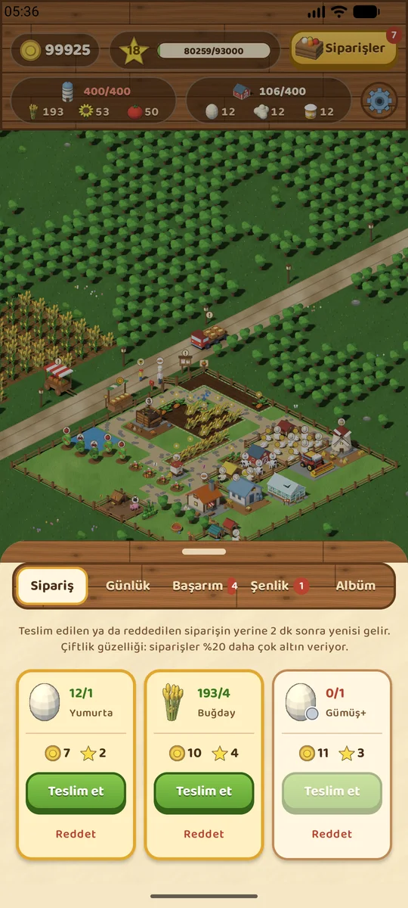
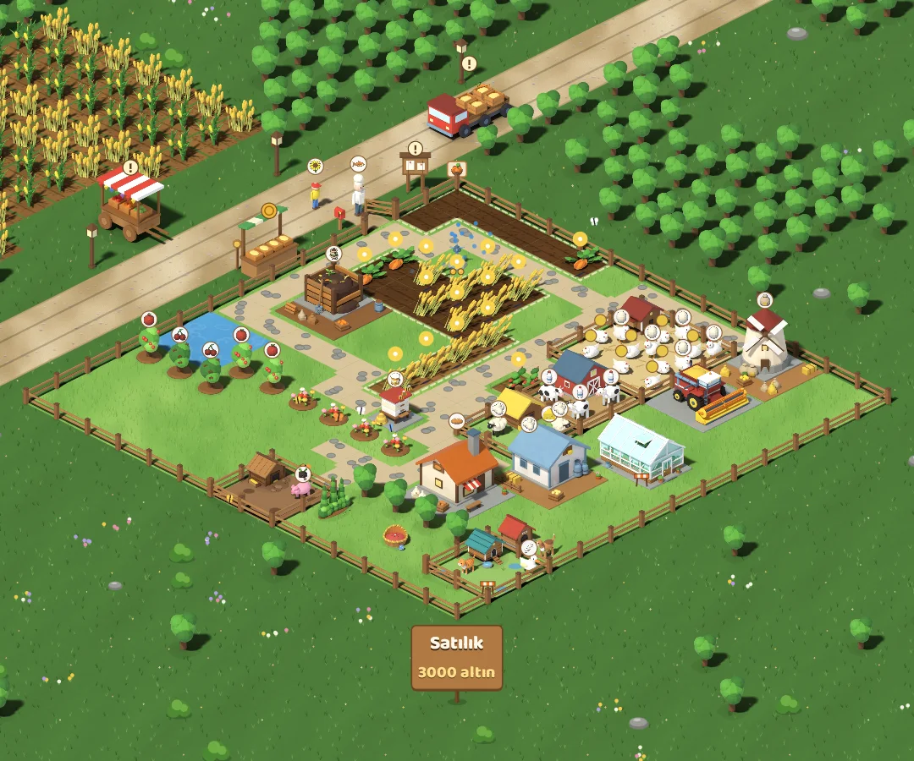
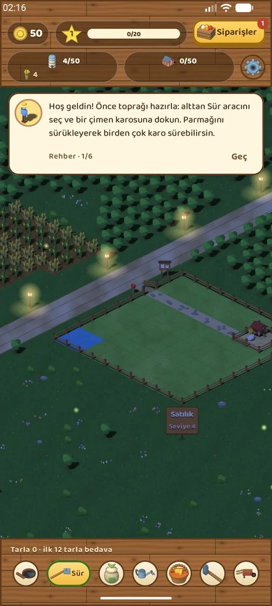

Ek, sula, biç
Tarlanı sür, tohumu ek. Yağmur susuz ekinleri kendisi sular, fıskiye kurarsan hiç kurumazlar. Biçtiğin toprak yorulur; yeniden sürmek bedava.
Beta 2 · Android ve Mac için ücretsiz
Cebinde küçük bir çiftlik.
Toprağı sür, tohum ek, hayvanlarına bak, fırında ekmek pişir. Köylüler kapına gelir, akşam olunca fenerler yanar. Acele yok, reklam yok; çiftliğin sen yokken de yavaş yavaş büyür.
Adaya dokun: olgun buğdayı biç, hayvanları sev.
Neler var
Tarlanı sür, tohumu ek. Yağmur susuz ekinleri kendisi sular, fıskiye kurarsan hiç kurumazlar. Biçtiğin toprak yorulur; yeniden sürmek bedava.
Tavuk, inek, koyun, keçi, ördek, domuz ve arılar. Besledikçe ürün verirler; evlerini temiz tutarsan daha mutlu olurlar.
Fırın, mandıra, pastane, mutfak, reçel kazanı… Ham ürünü işle, siparişleri yetiştir. Menemen de var.
Kapına köylüler gelir, yoldan geçen kamyon yük ister, köy panosunda küçük hikâyeler birikir. Haftada bir panayır, her mevsim bir şenlik.
Gün ışığı senin saatini izler: akşam fenerler yanar, gece ateş böcekleri çıkar. Yağmur yağar, fırtına çıkar, kargalar tarlana dadanır.
Oyun kapalıyken zaman işlemeye devam eder. Ürünler hazır olunca haber verir; uzun bir aradan sonra seni neler olduğunun özeti ve küçük bir hediye karşılar.
Seviyeden seviyeye
Her seviye yeni bir şey açar. Çiftliğin de seninle büyür: arazi 10×10'dan 22×22'ye genişler.
Görseller
Binalar, hayvanlar, köylüler ve simgeler Blender'da modellenip aynı ışıkla render edildi.



İndir
Son sürüm: PocketFarm 1.0.0 beta 1
Hazır; App Store'a çıkınca burada
Yakındaİstersen Play Oyunlar, Google ya da Apple hesabınla giriş yap: çiftliğin telefon, tablet ve Mac arasında seninle gelir. Giriş yapmadan da her şey oynanır.
Android: APK'yı indirip aç. Telefon bilinmeyen kaynaklardan yüklemeye izin vermeni isteyebilir; izin verip kurulumu tamamla.
Mac: DMG'yi aç, PocketFarm'ı Uygulamalar klasörüne sürükle. Uygulama henüz Apple onayından geçmediği için ilk açılışta macOS onu durdurur: Sistem Ayarları → Gizlilik ve Güvenlik'te en alttaki “Yine de Aç” düğmesine bas.
Bu bir beta: hatalarla karşılaşabilirsin. Bir sorun görürsen GitHub'da bir issue açman çok yardımcı olur.
Reklam, analiz ve izleme yok. Giriş yapmazsan çiftliğin yalnızca cihazında durur.
Giriş yaparsan çiftlik kaydın, seviyen, altının ve cihazının adı hesabına bağlı olarak Google Firebase'de saklanır. Hesabını ve buluttaki kaydını istediğin an oyunun Ayarlar bölümünden silebilirsin.
Oyun, saat ileri alınarak kazanç elde edilmesin diye açılışta internetten saati sorar. Bu site de çerez kullanmaz; yalnızca son sürümü öğrenmek için GitHub'a sorar.